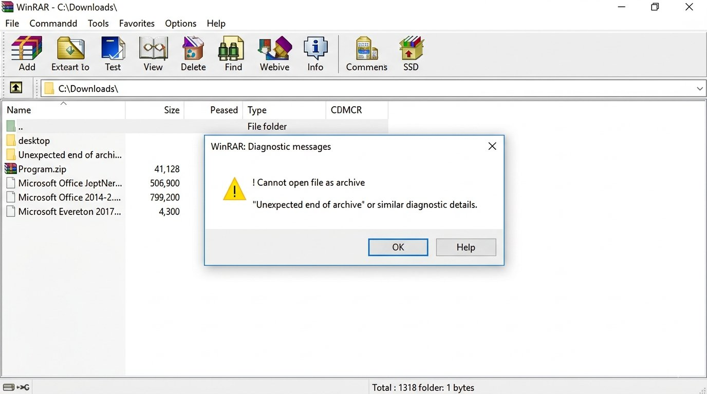
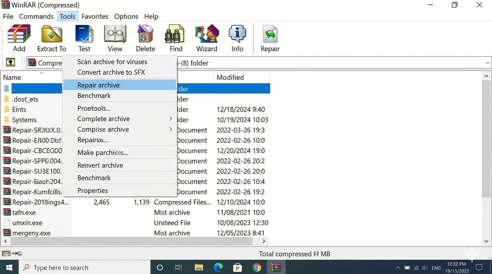
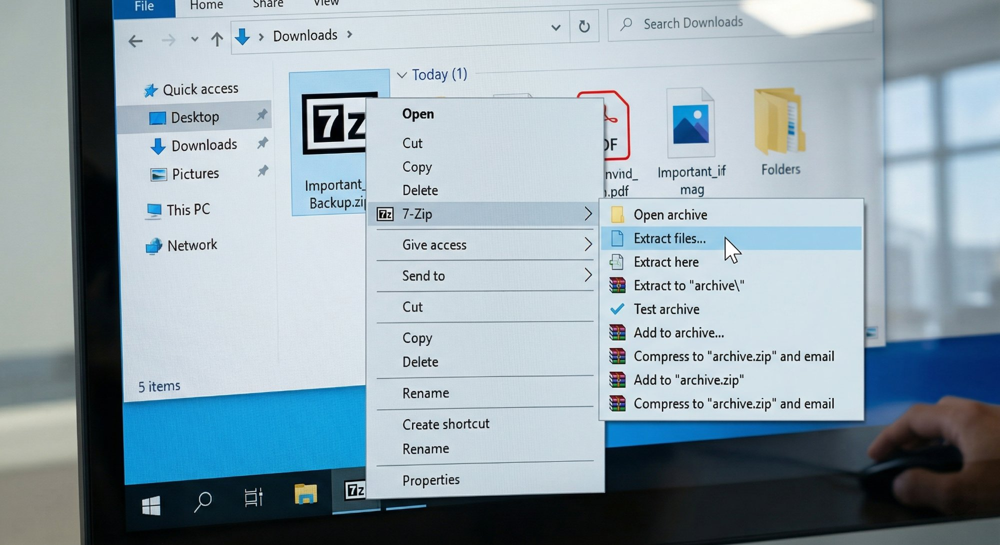
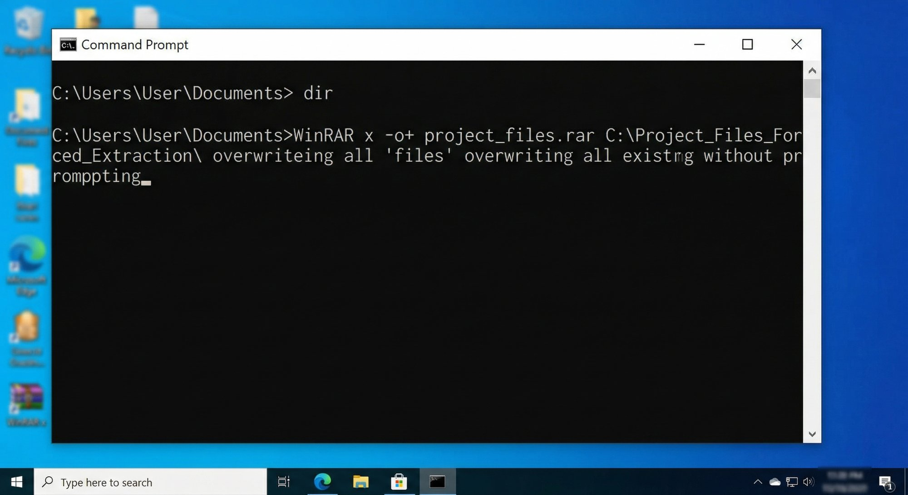

You double-clicked that RAR file you just downloaded — or received on WhatsApp — and WinRAR threw up "Cannot open file as archive" and refused to do anything with it. Before you assume the file is gone forever, try these steps — most people recover their files completely within a few minutes.
What Is the “Cannot Open File as Archive” Error?
This error means WinRAR opened your file, looked at the data inside, and couldn't recognise it as a valid archive format. It's essentially WinRAR saying "I don't know what this is — something's wrong with the structure." The file might be corrupted, incompletely downloaded, or in a format WinRAR isn't expecting.
The good news is — this is almost always fixable at home.

Why Does This Happen?
Incomplete or interrupted download
This is the most common reason by far. If your internet cut out mid-download — which happens constantly on Indian mobile data connections and even on broadband during peak evening hours — the RAR file lands on your PC missing a chunk of data. WinRAR can't open a file that never fully arrived, and it tells you so with this exact error.
File corruption during transfer
Moving files via a USB drive with bad sectors, transferring over WhatsApp (which recompresses files), or copying from an old CD or DVD can all corrupt the archive structure. The file looks fine sitting in your folder — the right size, the right name — but the internal data is damaged.
Wrong file extension
Sometimes a file gets renamed, accidentally or on purpose. Someone saves a PDF or an EXE, renames it with a .rar extension, and sends it to you. WinRAR opens it, finds it's not actually an archive, and gives you this error. It's more common than you'd think, especially with files shared through office groups.
Outdated WinRAR version
Newer archive formats — like RAR5, or certain ZIP variants — won't open correctly in older versions of WinRAR. If you're running a version from five or more years ago and someone sends you a modern archive, the mismatch can produce this exact error even on a perfectly healthy file.
How to Fix “Cannot Open File as Archive” — Step by Step
Follow these in order — stop as soon as the error clears. Most people are done by Step 2 or 3.
Before you do anything technical, just get the file again. If you downloaded it from a website, clear your browser cache and download it fresh — don't just click the existing file in your Downloads folder. If someone sent it to you, ask them to resend it through a proper file-sharing method like Google Drive or WeTransfer rather than WhatsApp, since WhatsApp alters files during transfer.
You'd be surprised how often this alone fixes the problem.
Open WinRAR, but don't double-click the broken file. Instead, open WinRAR directly from your Start menu, browse to the damaged archive, and single-click to select it. Then go to the Tools menu at the top and click "Repair Archive."
- WinRAR will ask whether the file is a RAR or ZIP archive — pick the one that matches your file's extension.
- WinRAR will attempt to rebuild the archive structure into a new file called "fixed.filename.rar" in the same folder.
- If repair succeeds, you'll see "Done" at the bottom of the log window.
This step alone fixes the problem for most people who've got a partially corrupted file, so don't skip past it.

Download 7-Zip from 7-zip.org — it's free and takes two minutes to install. Right-click your problem archive, choose "7-Zip" from the context menu, and select "Extract files."
7-Zip handles damaged archives more gracefully than WinRAR in many cases and will extract whatever data it can recover even if the file has errors. Don't uninstall WinRAR — just try 7-Zip as a second opinion.

Right-click the file, go to Properties, and look at the actual file size. If someone sent you a file called "report.rar" but it's only 5KB, it's almost certainly not an archive — it might be a shortcut, a text file, or something that was just renamed.
You can also try renaming the extension to .zip and attempting to open it in File Explorer. Sometimes archives are created as .zip but renamed to .rar, and WinRAR chokes on the mismatch while File Explorer handles it fine.
Go to win-rar.com and download the current version. Uninstall your existing WinRAR first via Control Panel, then install the fresh copy. After installation, try opening your archive again.
If the file was created with a newer RAR version than your old software could handle, this will sort it immediately.
Open Command Prompt (search for "cmd" in the Start menu). Type the following and press Enter, replacing the path with your actual file location:
"C:\Program Files\WinRAR\WinRAR.exe" e -kb -o+ "C:\path\to\yourfile.rar" "C:\output\folder\"
The -kb flag tells WinRAR to keep broken extracted files rather than deleting them. This is the option most people never know exists, and it can pull out partially intact files from an archive that otherwise refuses to open.

When You Should Get Professional Help
If you've tried all six steps and the file still won't open — and the file contains work documents, legal records, or anything you genuinely can't re-obtain — there are paid archive recovery tools worth trying.
- RecoverMyFiles and Hetman ZIP Recovery both offer trial versions that show you what's recoverable before you pay. Full licences run between ₹2,000 and ₹5,000.
- If the file came from a failing hard drive rather than a bad download, that's a different problem entirely — get the drive checked by a data recovery service before trying anything else, because running more software on a failing drive can make things worse.
Quick Recap
| Fix | Difficulty | Time Needed |
|---|---|---|
| Re-download or re-request the file | Very Easy | 2–5 minutes |
| WinRAR built-in repair tool | Easy | 3–5 minutes |
| 7-Zip extraction attempt | Easy | 5 minutes |
| Check file format / rename extension | Very Easy | 2 minutes |
| Update WinRAR to latest version | Easy | 5–10 minutes |
| Command-line forced extraction (-kb flag) | Moderate | 5 minutes |
Corrupted archive errors feel catastrophic in the moment, especially when the file has something important inside. But between WinRAR's repair tool, 7-Zip's more forgiving extraction, and the forced command-line method, you've got three solid chances to get your data out before spending a rupee. Take it one step at a time — most files have at least something recoverable.